Corey Rice
Teacher, Maker, Husband, Father
Cincinnati, OH, USA
General Skills
Classroom Teaching
Public Relations
Office Tech
Collaboration
Visualization
Data Anlysis
Languages
English
Spanish
FabLab/ Makerspace Skills
click to highlight
Mindsets
Design Thinking, Engineering Processes, Project Based Learning, Design Sprints
2D Vector Design
Inkscape, Adobe Illustrator, Corel Draw
2D Image Editing
GIMP, Adobe Photoshop
3D Design
Fusion 360, OnShape, Tinkercad, OpenSCAD, Solidworks
3D Drawing
Tinkercad, Blender, Meshmixer
Electronics Design
KiCAD, Eagle
Electronics/ PCB ordering
JLCPCB, OSHPark, DigiKey, Mouser
Microcontroller/computer
Arduino, ESP32, Raspberry Pi, Network administration
Microcontroller firmware
Arduino, Tinkercad, PlatformIO, ESPHome, ESP-IDF
Code/lanugages
Python, Arduino/C++, HTML, CSS, Javascript, Scratch, Rust
Frameworks
Py/Flask, Git, Docker, JS/Vue, Vanilla-HTML-CSS-JS, PWAs, CI/CD development, virtual machines
Data
relational databases, spreadsheets, NumPy/Matplotlib, graph databases, R-lang
Laser Engraver
Epilog Laser [w/ Calibration & Maintenance], Universal Laser, others
Vinyl Plotter
Roland, Inkcut, Cricut, Screen Printing, Iron-on
CNC Software
VCarve, Fusion 360 CAM, Inkscape (GCode), basic GCode
CNC operation
Shopbot, Gerber, Carbide3D, Tormach
3D printing sw
PrusaSlicer, Slic3r, Cura, Octoprint, Formlabs
3D printing hw
Prusa [w/ build, maintenance & repair], Makergear, Makerbot, Creality
Metalworking
small casting, vacuum casting, various ‘basic’ tools, MIG welding, Lathework
Molding & Casting
Silicone, Epoxy resin, Urethane resin, simple and two-part molds
Composite Materials
vacuum bagging, ‘wet’ layup, Using materials: fabric, fiberglass, carbon-fiber, kevlar
Woodworking
table saw, bandsaw, planer, jointer, drill press, a wide range of hand-tools
Textiles
hand cutting & sewing, sewing machine, serger, leatherwork, CNC embroidery
Home Construction
smart home, electrical, plumbing, flooring, tile, drywall, paint
Philosophy
Educating the future generation is an essential part of building a working society. I believe all individuals are capable learners, and have important contributions to make to our world. As an educator I focus on curating experiences in the classroom through students’ observations, experiments, and reflections to foster their curiosity. This includes supporting students’ wellbeing and creativity, through a growth mindset and design thinking.
All people are creative, capable of making things they care about, and have important contributions to make to our world. As a maker I exercise my own growth mindset and pursue projects to continually expand my skills or help those near me. Further, as a maker-educator, I believe that making is a great equalizer among students of all ages; where everyone can learn, and differentiated instrution is quintessential rather than an add-on. The tactile nature of learning in FabLabs and Makerspaces also bring accessability to difficult required topics: where better to learn about electricity, or geometry?
My broader Philosophy about life is to work my hardest, and do my best to be kind to others. We are all trying to make our mark in this world, and need to rely on each other to get there.
Work Experience
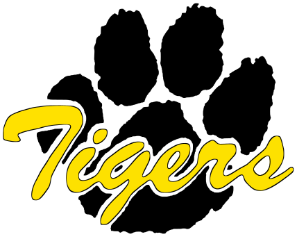
High School Science Teacher/ Daniel Hand High School
Sept 2020 - June 2023
Daniel Hand High School is the only high school of Madison Public Schools and annually graduates about 250 students. The town itself is nestled along the Connecticut shoreline, and has a strong academic and athletic reputation. In my time there I taught a range of classes, and was involved in a number of committees and clubs. and collaborated with a small team to develop a new Fab Lab. This involved creating a budget, meeting with the schoolboard multiple times, ordering equipment, and supporting the development of a community of teachers that felt confident using the lab with their courses.
Courses: Chemistry, Honors Chemistry, Independent Project, Electronics Engineering
Committees: "HandMade" FabLab leadership, Independent Project course curriculum
Awards: InfyMaker Grant/Award, Local NHS teacher of the year, Students’ choice, Connecticut PEAMST runner-up
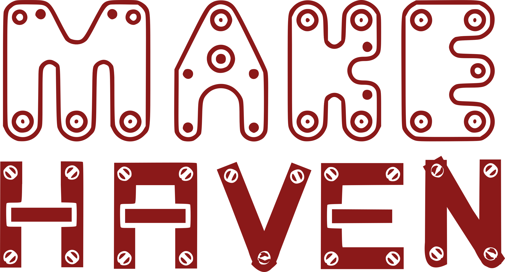
Lead Instructor/ MakeHaven
Sept 2020 - June 2022
Developed the first long-form course for a community nonprofit, and helped jump-started their broader educational efforts. This included guiding their first education coordinator, supporting other instructors at MakeHaven, and teaching a range of classes, like those described below.
“Foundations of Fabrication” is a 6-month course that teaches adults skills of digital and traditional design and fabrication. The course is designed to be a broad introduction to all things available at MakeHaven, and to build a community of makers. Critically, the course changed over the years to adapt to feedback from students and the community.
“Making Makers” is a two day workshop for educators to have a whirlwind tour of Fab Lab abilities, and discussion about how these are implemented at their school for supporting students and educational goals.
Instructor/ Sacred Heart University
Nov 2021 - May 2022
Taught graduate and undergraduate courses on Maker-education in the new university Fab Lab. These courses were designed to be hands-on, and focused on developing skills for educators. The content of the classes was built with the Fab Lab director, a previous instructor, and the college of education dean.
EDST 603: “Designed World” focused on Problem Based Learning, the Engineering Design Process and many ‘Maker’ skills for future administrators.
ENGR 125B: “Engineering Explorations” focused on ‘Maker’ skills, Problem Based Learning, the Engineering Design Process and more for Undergraduates finishing their education degrees.

High School Science Teacher/ Mayfield City School District
Aug 2009 - 2020
Mayfield City Schools is a suburban district of Cleveland, OH. The high school has about 1,200 students, and graduates about 300 students annually. In my time there I taught a range of classes, and was involved in a number of committees and clubs. I also helped develop the district’s first Fab Lab, and with several other innovative initiatives over the years. Mayfield is regularly ranked as one of Ohio’s top districts.
Courses: ‘Option’ Physics, AP Physics 2, Explorations of Engineering, Tech Squad (student Chromebook repair), Physics, Physical Science, Energy and the Environment, Astronomy, Intro to Physics & Chemistry, Chemistry, 8th Grade Integrated Science/ Earth Science
Committees: Senior 'Option' Program, Teachers Guild, Instructional Innovation, Teachers Union Financial Analysis Committee, Project Based Learning, Technology Advisory, Science Advisory, K8 STEAM field trips, Mobile Innovation Lab
Club Advisor: Science Olympiad Division C Co-Head Coach, Science Olympiad Division B Head Coach, First Robotics Co-Coach, Senior Search Advisor, Data Analysis Challenge Coach, Academic Challenge
Awards: Ideastream (Cleveland NPR/PBS) Innovative Educator, Local NHS teacher of the year, Students’ choice (6 years)
Conference Presentations:
- International
- Fab13 - Fab Kids: K12 Curriculum Writing
- Statewide
- Ohio School Improvement Institute - Cross Curricular Project Based Learning
- Regional
- Fab Play - LED Basics & Electronics Options
- Ideastream Technology & Learning - Cross Curricular Project Based Learning

Science Olympiad Coach/ Mayfield City School District
Nov 2009 - 2020
As the co-coach for the High School Science Olympiad team, I focused on coaching the building events. This involved helping students develop their projects in the high school Fab Lab, through the design process and digital fabrication. Responsibilities include maintaining the club budget, building the competition schedules, and developing necessary materials to run the invitational competitions.
Prior to this role I was the head coach for the middle school team. Responsibilities included managing the club budget, recruiting parents to coach independent events, coaching events, and creating the competition schedules.

Flight Leader (Thailand)/ Rustic Pathways
Jun 2018
Directed a small group of students through the process of navigating international airports. Independently monitored their wellbeing, as well as their personal safety and travel agendas.
Education

Dominican University of California/ graduate hours
May 2018 - Aug 2019
Continuing education - Developed high school fab lab curriculum over two summers of work and study.
Credits: 18hrs

Fab Academy 2017/ technical program
Jan 2017 - Jun 2017
Intensive program covering all aspect of digital fabrication in a Fab Lab. This program is undertaken as a part of a global 'distributed classroom'. Lessons proceed weekly, covering all topics within digital fabrication such as digital input/outputs, molding & casting, computer controlled cutting, 3D printing, electronics design/production, machine design, composite materials, project development, interface design, web development and source control. Completion of this program confers the title of "Fab Lab Guru" and the ability to serve as an instructor for Fab Academy at any registered Fab Lab.

American College of Education/ Masters Degree
Oct 2014 - Feb 2016
Curriculum and Instruction with a Concentration in Differentiated Instruction
Credits: 31hrs GPA: 4.00

Picademy/ Raspberry Pi Teacher Certification
May 2016
Member of the second American cohort of educators to become Raspberry Pi certified in San Mateo, California at the Computer History Museum.

Bowling Green State University/ Bachelors Degree
Aug 2004 - Dec 2008
Bachelors of Science in Education with a major in Adolescent/ Young Adult/ Secondary Education with a specialization in Physical Sciences: Chemistry and Physics
Credits: 155hrs GPA: 3.95
University Honors & Summa Cum Laude
Projects
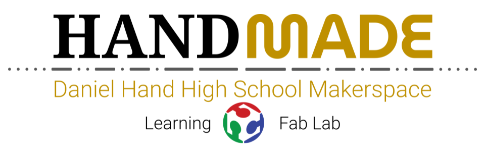
"HandMade" FabLab/ Daniel Hand HS Library
2021-2023
In collaboration with the district Library Department Coordinator and Assistant Superintendent, we planned and rolled out the first registered FabLab at the secondary level in the state of Connecticut. This involved presentations to the school board, planning and managing $60k in purchases, setting-up and maintaining the equipment, offering teacher Professional Development, and more. The FabLab was primarily used by “Independent Project” students, but teachers of nearly all disciplines used the “HandMade” lab in some capacity to enrich their class projects. Also, a transitional plan was enacted so that the lab could keep functioning after my departure.
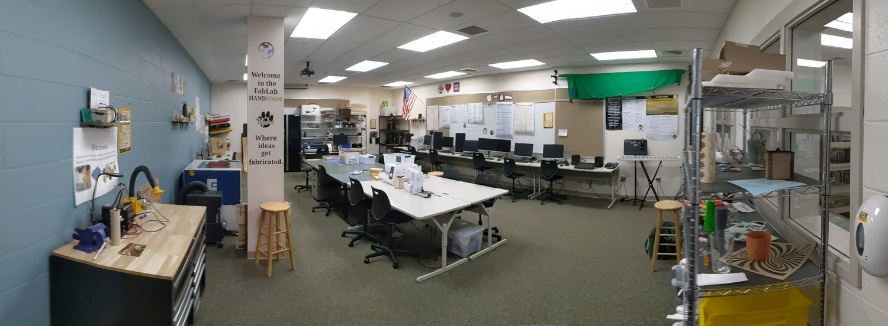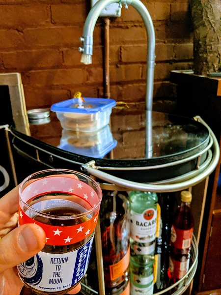
Robot Bartender/ Home Project
Jun 2018 - Current
Designed and built a robot bartender that can serve drinks. A series of medical grade pumps move liquids from bottles to a serving glass for further mixing. The interface is a full-stack website that is built with an asynchronous server to handle all the physical actions without slowing down the website interface experience. Multiple iterations of custom designed, hand soldered circuit boards were developed to have fine-tuned motor control, an integrated scale, and a hardware overflow shutoff.
This project was undertaken because it allowed for a complex coding task, while keeping the needed electronics and 3D design tasks relatively simple. It was my first exploration of full-stack web development. Using the robot is as easy as connecting to my personal WIFI, ordering a drink from the menu, and it is made within 30 seconds. Future iterations will further separate the synchronous and asynchronous servers, so a single database can serve shared recipes across multiple robots.
Wacom Stand/ MakeHaven
2022
Designed and built a stand for a professional quality tablet. With input from a range of MAkeHaven members, it was designed for broad accessability. Also, the stand was almost entirely digitally fabricated, to act as an example of what is possible with the tools available at MakeHaven.
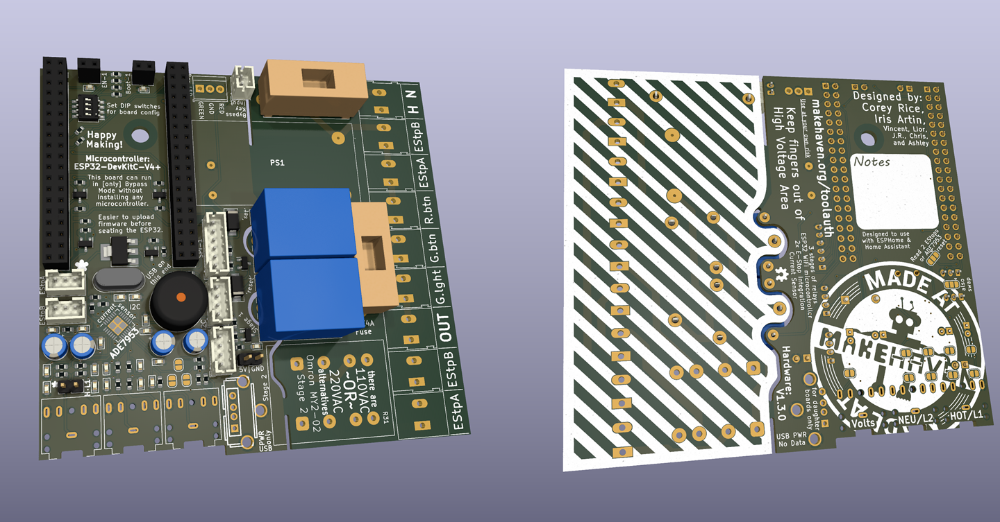
Tool Controller/ MakeHaven
2023
The custom PCB for the toolauth system. Intended to control access to tools (based on credentials) in a shared workshop, MakeHaven. Designed to work with an ESP32 board and ESPHome. Completely designed in KiCAD 6 and ordered as assembled boards from JLCPCB. The entire project is open source and available on GitHub and the docs are hosted here.
This custom hardware design was made to work in concert with a whole stack of dockerized services that will be open sourced soon. The broader project is owned by MakeHaven, where the system is being deployed.
.jpg)
Classroom Tables/ School Project
Aug 2019
Upon moving into a new teaching space for the 2019-2020 school year, it was clear that more furniture was necessary. I designed a table that could be cut out of a single sheet of plywood. Then, the design was converted to toolpaths and the first table was cut on a CNC and assembled. Only 4 bolts were needed to help further hold the table together.
Students soon used the table as an artist canvas, writing their name, drawing and painting across the surfaces. A few weeks later, it was determined that another table would be helpful in the space, and so it was made. This time, with “#theOption” engraved in its surface.
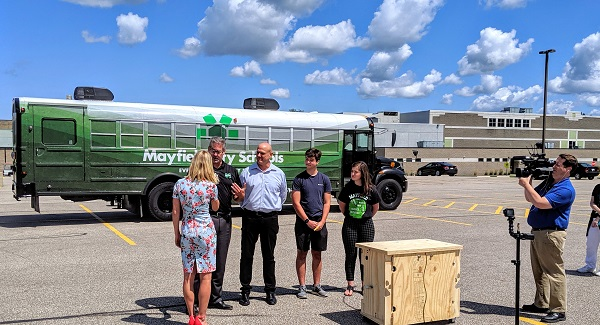
Mobile Innovation Lab/ School Collaboration
Aug 2018 - 2020
Mayfield City School District developed a Mobile Innovation Lab, and I served as the educator liaison. My engineering students and I developed a series of carts that are designed to hold Fab Lab equipment on the bus securely. Through collaboration with school administration, construction contractors, the bus garage, and IT department, we optimized the design of the bus by maximizing internal space and balancing the budget.
My engineering students built a fully functional prototype of these carts which housed a vinyl cutter, isolated power distribution, and environmental monitoring electronics. They exhibited this prototype at a district fundraiser, and those present were able to make stickers with the tools. The students had the opportunity to showcase this work on the local broadcast news pictured here.

Gravity Vehicle/ Science Olympiad Advisor
Sept 2019 - Mar 2020
For the 2020 Science Olympiad season, I advised a student group on developing a vehicle powered by gravitational potential energy. Students designed a ramp to get the car moving. There were over 35 design versions of the car itself, so the students could perfect a braking system that would stop the car millimeters from its target distance. The students also designed a release mechanism for consistency, and an aiming system for lining up the car's path.

Sounds of Music/ Science Olympiad Advisor
Sept 2018 - Mar 2020
Served as a coach for the “Sounds of Music” Science Olympiad event. The cello-like instrument pictured was developed by students after 2-years of an iterative design process, which I coached them through. They started with a roughly built box and learned techniques to digitally model their designs. The cello-like design came after a kalimba inspired instrument was shown to have too much self-resonance. Custom hardware was made with a drill press, while strings were from a guitar and bass.
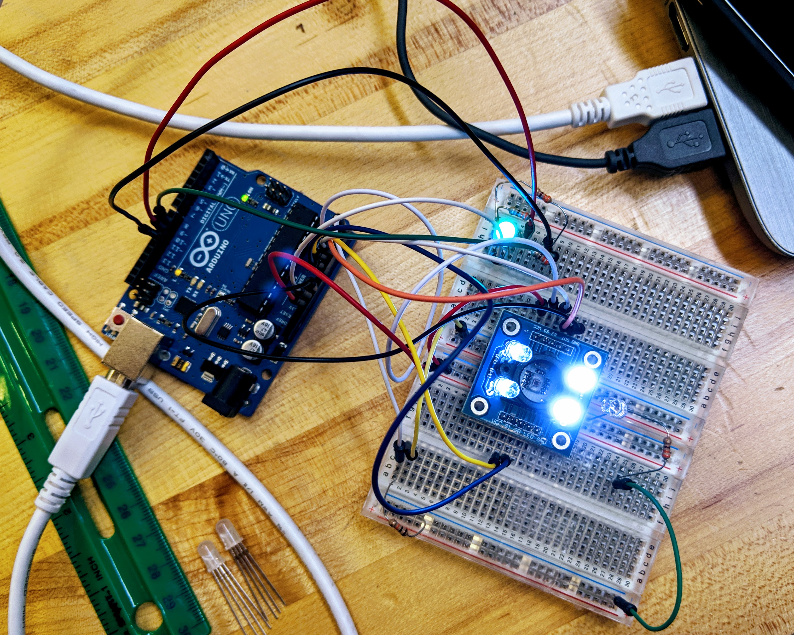
Learn to Program in C++ with Arduino/ scopesdf.org Lesson
May 2018
Developed a series of lessons that introduce high school students to the core concepts and skills needed to start programming using an Arduino. These lessons are appropriate for anyone new to coding or Arduino, and have been used by students and adults. This course of study ready for use in classes and hosted publicly on scopesdf.org. To complete these lessons a computer, USB cable and an Arduino are needed.

Light-up Wildcat Jacket/ School Project
Sept 2018
The wildcat is the mascot of Mayfield High School, and this is was a personal expression of school pride for homecoming. A jacket was purchased with a plain black back. The powercat logo was turned into a sewing pattern, and cut into a template. A continuous electroluminescent (EL) wire was sewn onto the back of the jacket. Electrical access was added to a front pocket to accommodate a power supply and controller circuit.
The EL wire can be powered directly from an inverting battery pack. However, since this was to be used at a pep rally, a second controller was hacked into, so the jacket could respond to ambient noise levels in real time. Motion sensors were also added, so the jacket would light up when the wearer dances.
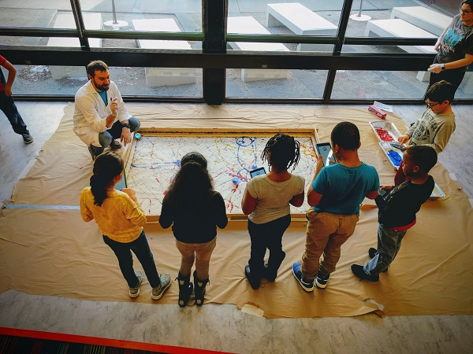
K-8 STEAM Field Trips/ School Collaboration
Aug 2017 - May 2019
A collaboration among elementary art teachers, and district technology coordinators led to a series of STEAM themed field trips to the high school Fab Lab. These field trips gave elementary and middle school students the opportunity to learn in the Fab Lab and access technology not available at their respective schools. In this series, technology was used to investigate various art concepts.
Shown here, are third grade students exploring the artistic styles of Jackson Pollack. An art canvas has been spread on the floor within a plywood constraint. Paint was placed onto the canvas and the students drove Sphero robots through the paint to create a collaborative masterpiece. They controlled the robots by either by remote control or coded motions. Over the course of the day, several groups of students collaborated to make a large painting which were taken back to their elementary school for display.
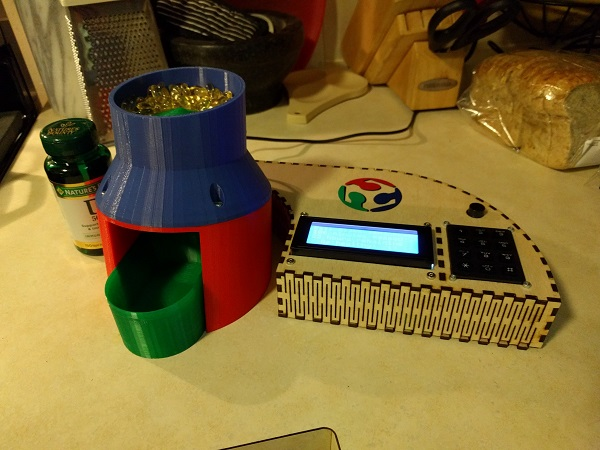
Automated Pill Dispenser/ Fab Academy Final Project
May 2017 - Jun 2017
For my final project in Fab Academy I built an automated pill dispenser. This device will accept a bottle of pills poured in the hopper, and dispense them on a defined schedule. A built-in automated alarm reminds the individual when to take the medication.

Candle Making Machine/ Fab Academy Collaboration Project
Mar 2017
I partnered with two local Fab Academy students to build a candle making machine. My role was to design the structure of the robot. After making a prototype out of cardboard, the next version was made out of wood and metal. The final parts were cut on the CNC and laser cutter. Electronics were the built from the newest Machines That Make modules. In the end, our new machine was built to automatically do something very old – make candles by dipping wicks into molten wax.

GPS Motion Tracking PBL/ School Collaboration
Aug 2016 - Dec 2016
I was able to help engineering students design and build GPS motion trackers that were taken on roller coasters to log data. Later, positional information was analyzed by math students. This project represented a massive collaboration with a math teacher, district administration and Progressive Insurance engineers. Students were broken into teams that purchased electronics and used collected resources to make operational GPS dataloggers.
The students made connections across their classes, and applied skills to study real-world events. The engineering students had to meet a strict deadline of having their GPS unit ready to work before the class trip to Cedar Point. The math students needed to make piecewise functions and graphs of the data to describe the observed motion, and separate the signal from noise. All of this student effort was centered around designing solutions and project-based learning, beyond the context of any single class.
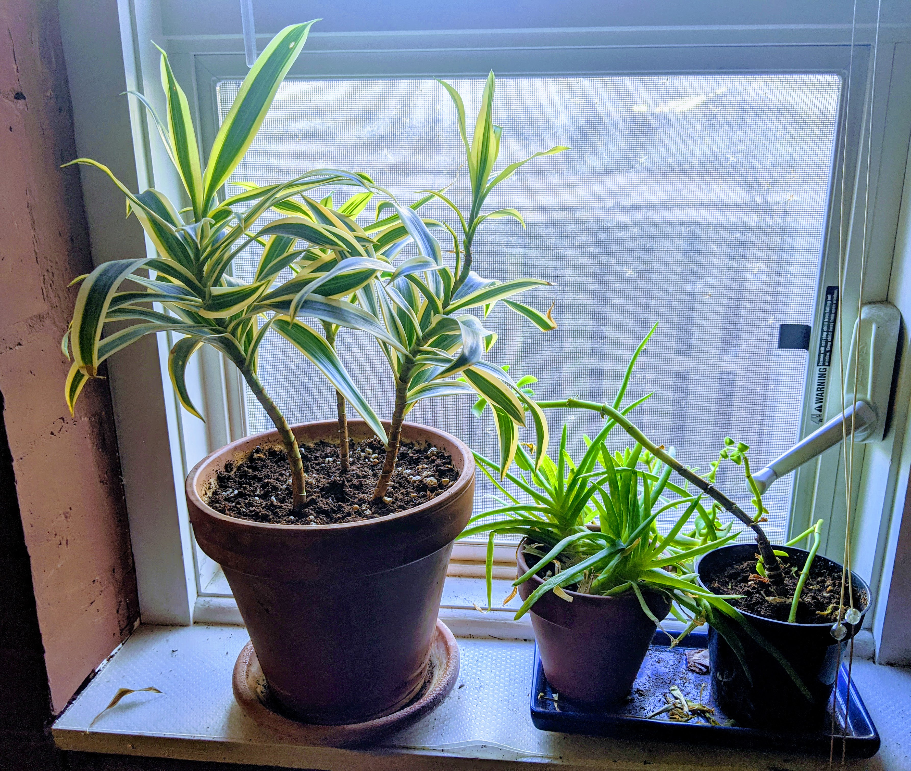
Garden Monitoring Project/ Student Passion Project Advisor
Mar 2016 - Jun 2016
A team of students worked together to build a system of sensors and a webserver to monitor the growing conditions in a container garden. In order to develop this project, a partnership with Progressive Insurance engineers was established. Progressive volunteered three engineers for an afternoon of design thinking and guidance. They also provided the students with a grant to fund this and future projects. The system eventually used a distributed network of Arduinos and a Raspberry Pi to manage this early internet of things project.